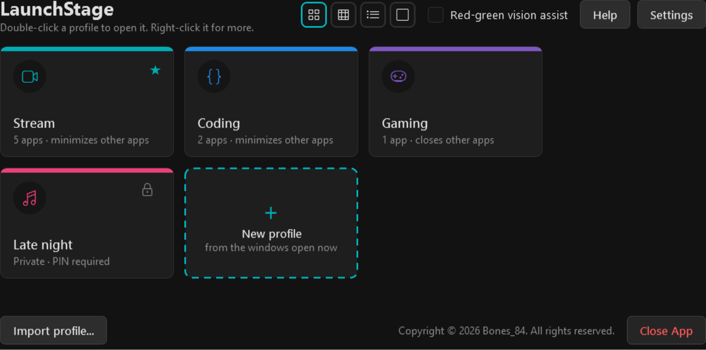
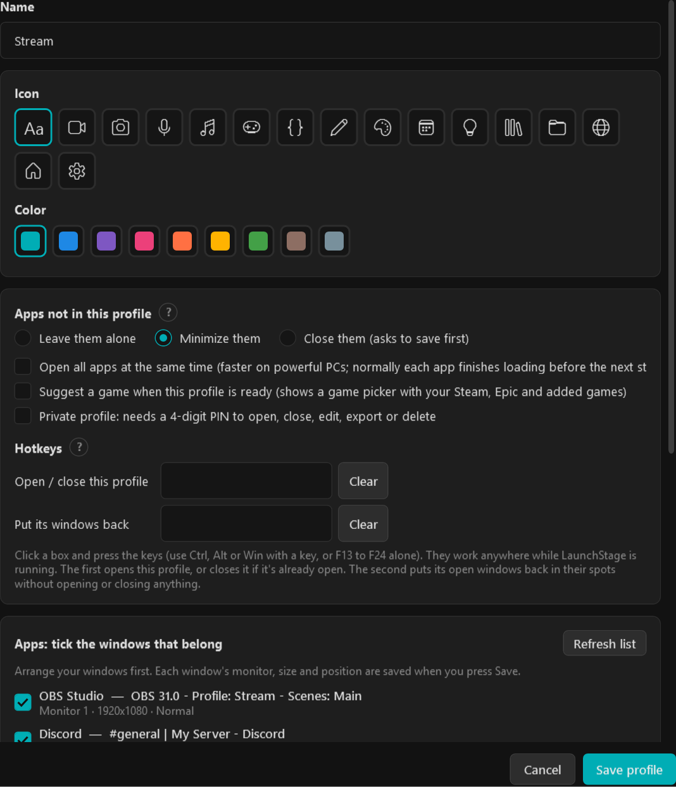
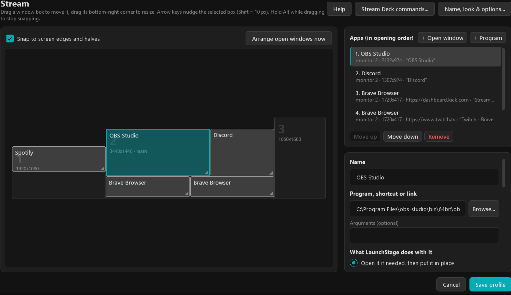
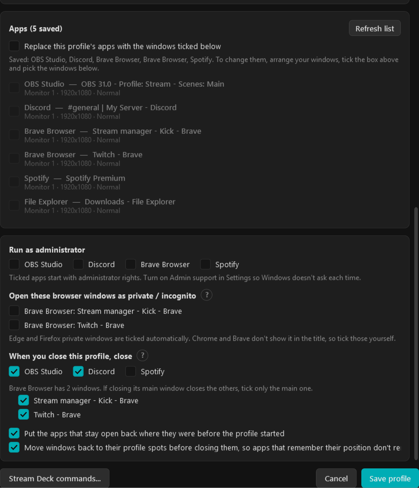
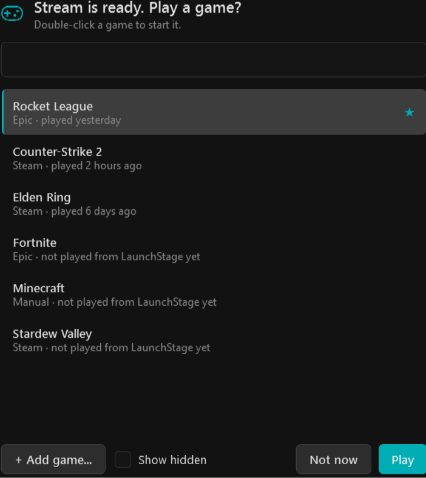
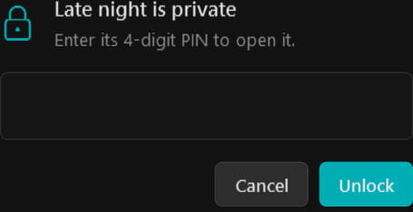
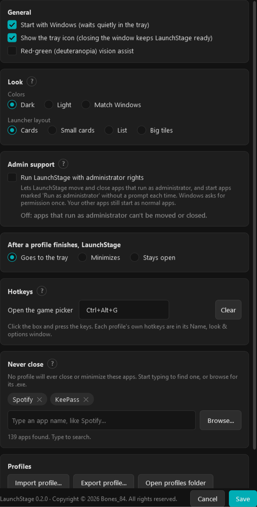
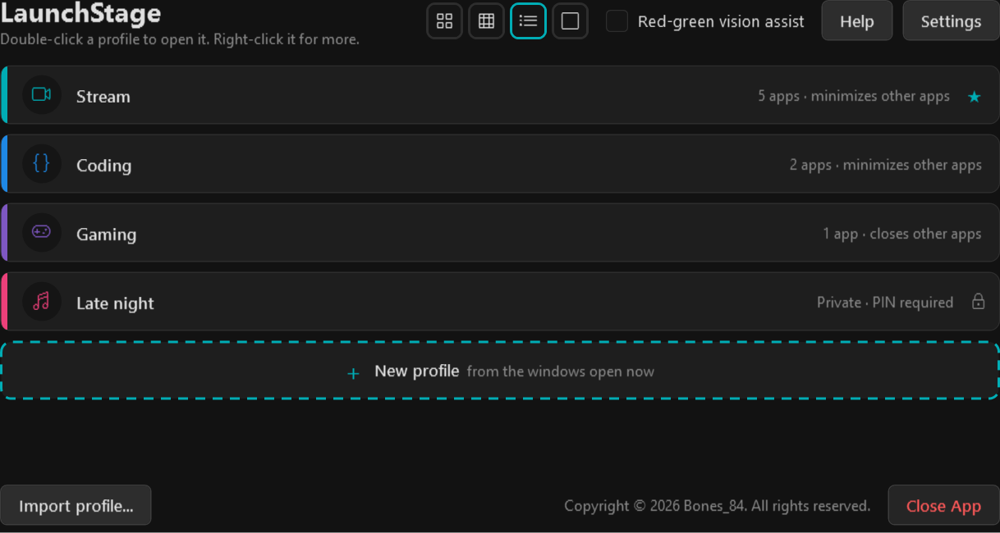

LaunchStage guide
Your whole workspace in one press. Version 0.2.0.
Copyright © 2026 Bones_84. All rights reserved. Free for personal use. Download it only from the official LaunchStage page on GitHub; please don't share or re-upload it.
What LaunchStage does
LaunchStage sets up your whole PC for one job with one press.
You make a profile for each thing you do, like Stream, Coding or Gaming. A profile remembers:
- which apps you need (OBS, Discord, a browser on your dashboard...)
- exactly where each window goes, on which monitor, and how big it is
- what happens to the apps you don't need: leave them, minimize them or close them
When you open the profile, LaunchStage opens the apps one at a time, waits until each one is ready, and puts every window in its spot. When you're done, closing the profile closes those apps again.

Where to find it
- The LaunchStage window: one card for each profile. Double-click a card to open that profile.
- The tray icon (by the clock, bottom right): right-click it to open or close a profile without opening the window.
- Hotkeys and button pads: a key or a button for each profile. See Hotkeys and Stream Deck and other button pads.
Next: Make your first profile.
Make your first profile
A profile is made from the windows you have open right now, so set things up the way you like them first.
- Open every app you want in the profile.
- Put each window where you want it and make it the size you want. Use all your monitors if you like.
- In LaunchStage, click the dashed New profile card.
- Type a Name, like
Stream. - Pick an Icon and a Color for the card.
- Under Apps not in this profile, choose what happens to everything else: Leave them alone, Minimize them or Close them.
- In the list of windows, tick each window that belongs to this profile.
- Click Save profile.

That's it. Your new profile shows up as a card in the LaunchStage window.
Good to know
- Apps that are already open are reused when the profile opens, just moved into place. LaunchStage only opens what's missing.
- Apps that run as administrator (some games, tools) need Admin support. Turn it on in Settings. See Settings and look.
- Browser windows can open on their own websites. See Browser windows and websites.
Open and close a profile
Open a profile
Any of these work:
- Double-click the profile's card in the LaunchStage window.
- Right-click the tray icon and click the profile's name.
- Press the profile's hotkey (see Hotkeys).
- Press its button on a Stream Deck or other button pad (see Stream Deck and other button pads).
A small box in the bottom-right corner shows what LaunchStage is doing, and says is ready when everything is in place.
Close a profile
- Right-click the profile's card and click Close profile. (Or right-click the tray icon, then Close a profile.)
- LaunchStage closes the profile's apps one at a time.
- If an app asks "Save changes?", answer it. LaunchStage waits for you.
If an app doesn't close (for example, you clicked Cancel when it asked to save), the corner box asks what to do:
- Try again: asks the app to close once more.
- Leave it open & continue: skips that app and closes the rest.
- Stop profile: stops right there.
Apps you chose to keep open go back to where they were before the profile started.
Put windows back
Dragged windows around during a session? Right-click the card and click Put windows back. Every open window of that profile jumps back to its spot. Nothing is opened or closed.
The card's right-click menu
| Menu item | What it does |
|---|---|
| Activate | Opens the profile |
| Close profile | Closes the profile's apps |
| Put windows back | Moves the open windows back to their spots |
| Edit layout & apps... | Move windows, add or remove apps (see Move and resize windows) |
| Name, look & options... | Name, icon, color, options, hotkeys and PIN |
| Duplicate | Makes a copy to start a new profile from |
| Stream Deck commands... | Command lines for button pads and shortcuts |
| Add to favorites | Puts the card first, with a star |
| Export... | Saves the profile as a file to back it up or share it |
| Delete | Removes the profile (asks first) |
Move and resize windows
Right-click a profile's card and click Edit layout & apps.... You'll see your monitors drawn to scale, with a box for every window in the profile.

Move a window
- Drag its box to where the window should go.
- To resize it, drag the box's bottom-right corner.
- Click Save profile.
Boxes snap to the edges and halves of each screen. Hold Alt while dragging to turn snapping off. After clicking a box, the arrow keys nudge it 1 pixel (hold Shift for 10).
Try it out
- Move it there now: moves that app's open window to the spot, so you can see how it looks.
- Use its current spot: you moved the real window yourself? This copies where it is right now.
- Arrange open windows now: puts every open window of the profile in its spot. Nothing opens or closes.
Add, remove and reorder apps
- + Open window: add a window that's open right now.
- + Program: add a program or shortcut by its file.
- Move up / Move down: apps open in this order, top first.
- Remove: takes the app out of the profile.
Settings for one app
Click an app in the list (or its box) to see its settings on the right:
- What LaunchStage does with it: open it and put it in place, only put it in place if it's already open, or only open it.
- Monitor, and Normal, Maximized or Minimized.
- Run as administrator, and Close it when the profile is closed.
- Wait before opening: handy for apps that need another app to start first.
- Websites (browsers only). See Browser windows and websites.
Which apps close
Right-click a profile's card and click Name, look & options....

Apps that aren't in the profile
Under Apps not in this profile, choose what happens when the profile opens:
- Leave them alone: nothing happens to them.
- Minimize them: they're tucked away to the taskbar.
- Close them (asks to save first): they're closed one at a time, and LaunchStage waits if one asks to save.
Apps that should never close
Some apps should never be closed or minimized by any profile, like a password manager or music player.
- Open Settings.
- Under Never close, start typing the app's name and pick it from the list. (Or click Browse... to find its program file.)
- Click Save.
When you close the profile
Under When you close this profile, close, tick the apps that should close with the profile. Unticked apps stay open.
- Put the apps that stay open back where they were before the profile started: handy for apps like Discord that you use all the time.
- Move windows back to their profile spots before closing them: apps that remember their own window position will remember the profile's layout, not where you last dragged them.
Apps with several windows
Some apps open several windows (like a chat overlay with a main window and chat boxes). An app like that gets one tick box per window. Tick only the main window: LaunchStage closes just that one, and the app closes its other windows itself.
Browser windows and websites
Each browser window in a profile can open on its own websites, in its own window.
Set a window's websites
- Right-click the profile's card and click Edit layout & apps....
- Click the browser window in the list.
- In the Websites box, type the sites, one per line. Each one opens as a tab. (
kick.comis fine; LaunchStage addshttps://for you.) - Click Save profile.
Leave Websites empty and the browser shows whatever it normally shows when it starts.
Private / incognito windows
- Right-click the profile's card and click Name, look & options....
- Under Open these browser windows as private / incognito, tick the windows that should be private.
- Click Save profile.
A private window only ever uses or closes private windows. Normal windows leave private ones alone.
Which browsers work
Chrome, Brave, Edge, Firefox, Vivaldi, Opera and Opera GX, Chromium, Arc, Thorium, Zen, LibreWolf, Waterfox, Floorp and Mullvad Browser. Other browsers still open and get moved into place, just without the Websites box or private windows.
Hotkeys
A hotkey is a key combination, like Ctrl+Alt+1, that works anywhere in Windows while LaunchStage is running, even when it's hidden in the tray.
Give a profile hotkeys
- Right-click the profile's card and click Name, look & options....
- Under Hotkeys, click the Open / close this profile box.
- Press the keys you want, for example
Ctrl+Alt+1. The box shows them. - If you like, click the Put its windows back box and press another combination.
- Click Save profile.
- Open / close this profile: press it once to open the profile. Press it again to close it.
- Put its windows back: moves the profile's open windows back to their spots.
A hotkey for the game picker
Open Settings, click the Open the game picker box under Hotkeys, press the keys, and click Save.
Rules for hotkeys
- Use
Ctrl,AltorWintogether with a key. The keysF13toF24(found on many macro pads) also work on their own. - Two hotkeys can't be the same. LaunchStage tells you if one is already used.
- If another program already uses a combination, LaunchStage tells you, so you can pick another.
- To remove a hotkey, click Clear next to it (or click the box and press
Backspace).
Game picker
The game picker lists your games so you can start one quickly.

Open it
- Right-click the tray icon and click Play a game...
- Or let a profile suggest a game when it's ready: in the profile's Name, look & options..., tick Suggest a game when this profile is ready.
- Or give it a hotkey (see Hotkeys) or a button (see Stream Deck and other button pads).
Use it
- Type part of a game's name to find it (or use the arrow keys).
- Double-click the game, or press
Enter. It starts, and the picker closes.
Click Not now (or press Esc) to close it without playing.
Your games
- Installed Steam and Epic games show up by themselves.
- + Add game... adds any other game by its program or shortcut.
- Right-click a game to Add to favorites (favorites come first), Hide from this list, or Remove a game you added.
- Tick Show hidden to see hidden games again.
- Games you played most recently come right after your favorites.
Private profiles (PIN)
A private profile needs a 4-digit PIN before anyone can open, close, edit, copy, export or delete it.
Make a profile private
- Right-click the profile's card and click Name, look & options....
- Tick Private profile.
- Type a 4-digit PIN, then type it again in the Again box.
- Click Save profile.
The card now shows a lock and hides its list of apps.

Good to know
- After 5 wrong tries, the profile is locked for 60 seconds.
- Buttons and hotkeys still work: LaunchStage pops up the PIN box when you press them.
- Change the PIN: type a new one twice in Name, look & options... and save. Leave both boxes empty to keep the old one.
- Stop it being private: untick Private profile and save.
Settings and look
Click Settings at the top of the LaunchStage window (or right-click the tray icon, then Settings).

General
- Start with Windows: LaunchStage waits quietly in the tray after you sign in.
- Show the tray icon: with it on, closing the window keeps LaunchStage ready in the tray. Close App at the bottom of the window exits completely.
- Red-green (deuteranopia) vision assist: swaps red and green for colors that are easier to tell apart: blue means good, yellow means warning, orange means problem.
Look
- Colors: Dark, Light, or Match Windows (follows your Windows light or dark setting).
- Launcher layout: Cards, Small cards, List or Big tiles. The four small buttons at the top of the LaunchStage window switch this in one click.

Admin support
Apps that run as administrator can only be moved or closed by a program that also has administrator rights. Tick Run LaunchStage with administrator rights and Windows asks for permission once. Your other apps still start as normal apps.
The other sections
- After a profile finishes, LaunchStage: goes to the tray, minimizes, or stays open.
- Hotkeys: the game picker hotkey (see Hotkeys).
- Never close: apps no profile will ever close (see Which apps close).
- Profiles: import or export profiles, open the profiles folder, or open the log.
Click Save to keep your changes.
Remove LaunchStage
LaunchStage doesn't need installing, but it does add a few things to your PC (like starting with Windows). To take it all away again, don't just delete its folder:
- Open Settings and, at the bottom, click Remove LaunchStage.... (Or double-click Uninstall LaunchStage.cmd, next to LaunchStage.exe.)
- To keep your profiles, untick Also delete my profiles, settings and game history.
- Click Remove LaunchStage. If you used Admin support, Windows asks for permission once.
LaunchStage closes, and a few seconds later its files and folder are gone. It only deletes its own files, never anything else in that folder.
When something goes wrong
A window didn't go to the right spot
- Right-click the profile's card and click Put windows back.
- Still wrong? Click Edit layout & apps..., click the app, and check its Monitor and position. Move it there now lets you try the spot.
Some apps move themselves right after opening. LaunchStage puts them back a few seconds later, so give it a moment.
An app didn't open
- "...its window didn't appear": the app took longer than usual. In Edit layout & apps..., click the app and raise Give up waiting after (seconds).
- "...didn't open": the program file may have moved (apps like Discord change folders when they update). In Edit layout & apps..., click the app, then Browse... to pick its program again.
An app didn't close
- The corner box asks what to do: Try again, Leave it open & continue or Stop profile.
- "...it's running as administrator": turn on Admin support in Settings.
A game isn't in the game picker
Click + Add game... in the game picker and pick the game's program or shortcut.
Get help from someone
LaunchStage writes everything it does to a log file. It's the best thing to send when asking for help.
- Open Settings.
- Click Open log (under Profiles).
- Copy the last part of the log, or send the whole file.
The log is in %AppData%\LaunchStage\Logs\debug_log.txt.